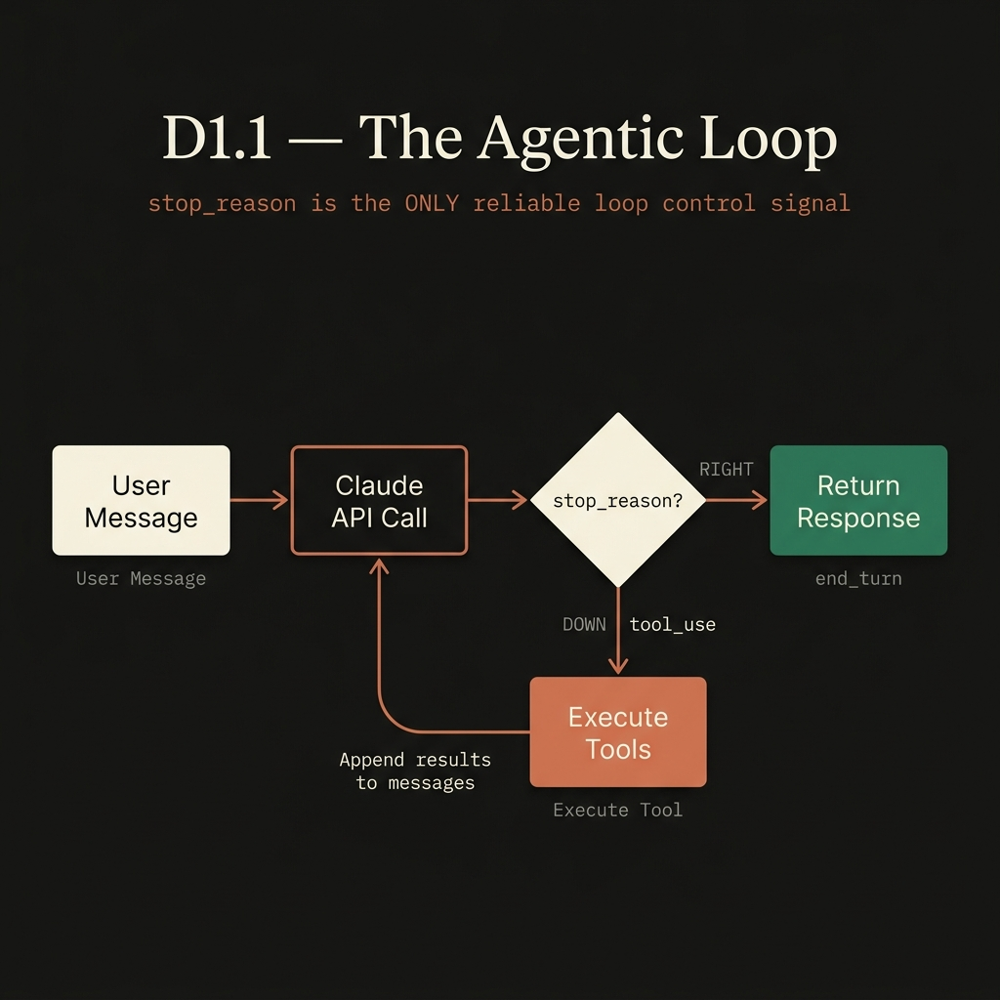
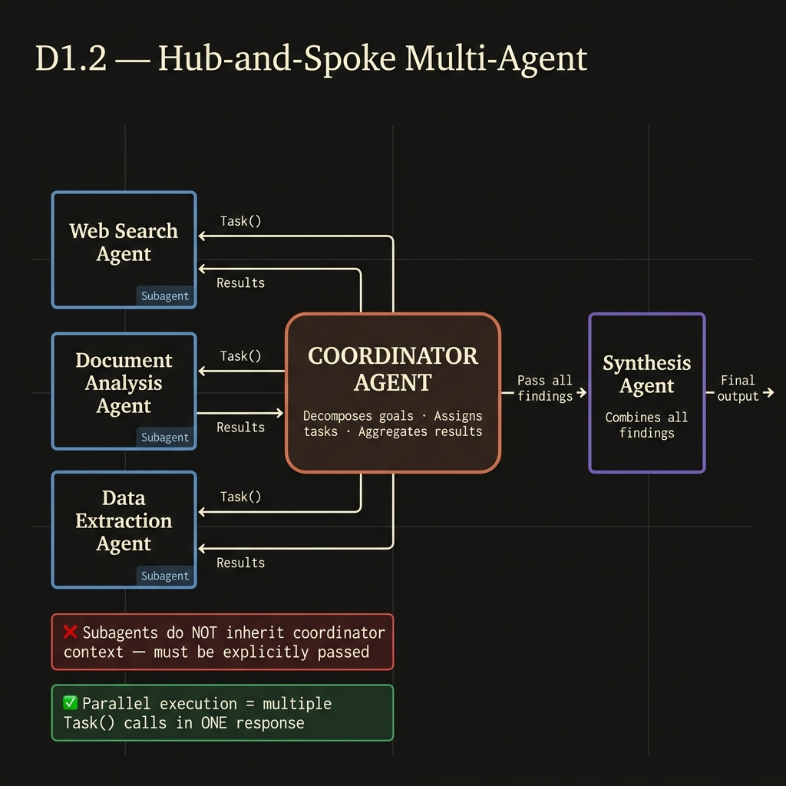
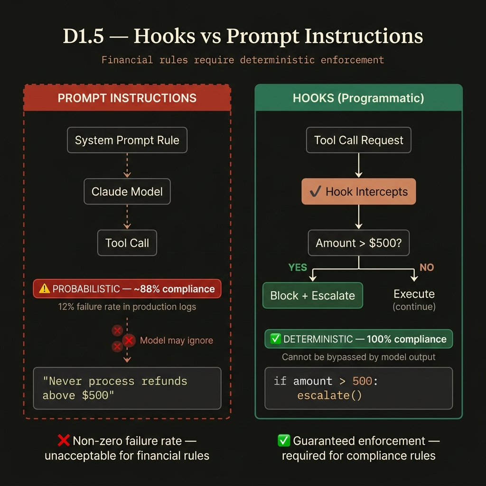

Every concept taught at the depth the real exam tests. Decision logic, option-by-option elimination, anti-pattern reasoning — all grounded in the official Skilljar question set.
stop_reason → if tool_use execute tools & loop again → if end_turn return response. The loop's control signal is always stop_reason, never parsed text.Task() calls in a single response turn. Results return to the hub for synthesis.What it is: The agentic loop is the fundamental execution pattern of every Claude-powered agent. An agent calls the Claude API, reads the stop_reason field in the response, and uses that signal — and only that signal — to decide whether to continue (execute tools and call API again) or terminate (return the final response).
Why it matters: The loop pattern is the backbone of all agentic systems. Getting the control signal wrong (parsing text, using iteration caps as primary stop) leads to infinite loops, premature termination, or lost tool context. Every more complex multi-agent concept builds on this foundation.

| Distractor option | Why it fails |
|---|---|
| Parse text for "I'm done" / "task complete" | Claude never guarantees specific phrasing. Model updates silently change output format. Non-deterministic — one prompt variation breaks it. |
| Iteration cap (e.g. 10) as primary stop mechanism | Terminates mid-task when agent may be 80% through a complex operation. Valid ONLY as a safety backstop, never as primary signal. |
| Check whether response contains assistant text | Claude often returns BOTH text AND tool_use blocks in one response. This would terminate the loop prematurely. |
| Check stop_reason field | Explicit, guaranteed, version-stable API contract. "tool_use" = more work. "end_turn" = Claude done. Never ambiguous. |
Critical: you must append both the assistant's full response AND the tool results as a user turn before the next API call. Omitting either causes Claude to lose context of what tools it called and what they returned.
Single-pass review of many files produces: inconsistent depth, missed bugs, contradictory feedback (flags a pattern in file A, approves identical code in file B). Root cause: attention dilution when processing many files simultaneously.
The fix is always two-pass decomposition:
| Wrong option | Why it fails |
|---|---|
| Switch to larger context window model | Window size does not fix attention quality. Model attends poorly to middle of large inputs regardless of window size. |
| Run 3 independent passes; flag consensus issues only | Consensus filtering SUPPRESSES real bugs caught only intermittently. You find fewer issues, not fewer false positives. |
| Require developers to submit smaller PRs | Shifts burden to developers. Does not fix the review system architecture. |
| Per-file local pass then separate cross-file integration pass | Directly addresses attention dilution. Each pass has focused scope. No contradictory feedback possible. |
What it is: Multi-agent systems use multiple Claude instances working together. The dominant topology is Hub-and-Spoke: a Coordinator Agent receives the high-level goal, decomposes it into focused subtasks, dispatches each to a specialist Subagent (web search, document analysis, synthesis), and aggregates the results.
Why it matters: Multi-agent patterns appear in nearly every complex AI system. The exam tests whether you know where bugs originate (always the coordinator’s decomposition, not the subagents), how context flows (explicitly, never automatically), and what parallel execution actually means (multiple Task() calls in one turn).

| Option | Verdict | Reasoning |
|---|---|---|
| Synthesis agent lacks gap-detection instructions | WRONG | Synthesis agent received exactly what it was given. It cannot detect gaps in data it was never assigned to gather. |
| Web search agent queries not comprehensive enough | WRONG | Agent searched correctly within its assigned scope (visual arts). The scope assignment was wrong. |
| Document analysis agent filtering non-visual sources | WRONG | Agent worked correctly within its narrow assignment. Assignment was the problem. |
| Coordinator task decomposition too narrow | CORRECT | Logs confirm: coordinator assigned only visual arts subtasks. Subagents not at fault. |
When the exam says "synthesis agent needs to cite sources accurately," the correct context passing separates content from metadata as structured fields.
85% of synthesis verifications are simple fact-checks. 15% require deeper investigation. All currently go through coordinator (2-3 round trips, +40% latency). Best fix:
| Option | Verdict | Reasoning |
|---|---|---|
| Return structured context: type, query, partial results, isRetryable | CORRECT | Coordinator gets full picture. Can retry with different query, use partial results, or try alternative approach. |
| Retry internally with backoff, return “search unavailable” after exhaustion | WRONG | Generic status hides failure type. Coordinator cannot retry with different query or use the partial results already found. |
| Return empty result marked as successful | WORST — eliminate first | Silent suppression. Coordinator proceeds as if data exists, producing silent incomplete output. |
| Propagate exception, terminate entire workflow | WRONG | One timeout destroys all completed work from other subagents. Recovery impossible. |
Search returned “0 results” for category A and “timeout” for category B. How to handle each?
What it is: Hooks are programmatic interceptors that fire on every matching tool call, independent of model output. They enforce business rules — refund caps, identity verification gates, audit logging — with 100% determinism. Prompts are probabilistic (the model may ignore them). Hooks are deterministic (the model cannot bypass them).
Why it matters: Financial and compliance rules cannot rely on probabilistic enforcement. A 12% failure rate on identity verification or an occasional $600 refund violating a $500 cap are production disasters. The exam consistently tests whether you know when to use programmatic gates vs. prompt instructions.

Production logs show agent processes $600+ refunds without escalating, despite system prompt saying “Never process refunds above $500.” Four options:
| Option | Verdict | Why |
|---|---|---|
| A: Reformat system prompt (bold, CAPS, more prominent) | WRONG | Cosmetic changes do not change compliance probability. Model sees rule regardless of formatting. |
| B: Add few-shot examples showing escalation for high-value refunds | WRONG | Improves tendency but does not make compliance deterministic. Still has non-zero failure rate. |
| C: Implement hook intercepting process_refund, blocking amounts > $500 | CORRECT | Deterministic. Runs on every call. Cannot be bypassed by model output. Compliance = 100%. |
| D: Reduce max_tokens to force shorter responses | WRONG | Response length has zero relationship to rule compliance. Always eliminate this option. |
Agent skips get_customer 12% of time, calls lookup_order with only a name, leading to misidentified accounts.
| Option | Verdict | Why |
|---|---|---|
| A: Programmatic prerequisite blocking lookup_order until get_customer returns verified ID | CORRECT | Deterministic enforcement. 100% reliable. The financial consequence makes non-zero failure rate unacceptable. |
| B: System prompt: “Always call get_customer first” | WRONG | Still has non-zero failure rate. The 12% failure is the evidence this doesn’t work. |
| C: Few-shot examples showing correct ordering | WRONG | Reduces failures but does not eliminate them. Not acceptable for financial operations. |
| D: Routing classifier enabling subsets of tools per request type | WRONG | Addresses tool availability, not tool ordering. Wrong problem being solved. |
| Trigger | Valid? | Why |
|---|---|---|
| Policy gap: rules silent on the situation | YES | Agent must not fabricate policy. Human judgment required. This is the scenario in official question d5-3. |
| Customer explicitly requests a human | YES | Honor explicit preference. Offer resolution once, then escalate if they reiterate. |
| Business threshold exceeded (e.g. $500 cap) | YES | Defined business rule. Enforce with hook, not prompt. |
| Negative customer sentiment detected | NO | Sentiment does not equal case complexity. Unhappy customers with simple issues need resolution, not escalation. |
| Self-reported model confidence below threshold | NO | LLM confidence is poorly calibrated. Model is confidently wrong on the hard cases specifically. |
| Multi-concern request (billing + return + defect) | NO | Agent should decompose and handle each concern independently, not escalate. |
| Mechanism | Use when | Avoid when |
|---|---|---|
| –resume | Prior tool results still reflect current state. Continuing analysis without intervening changes. | Files have changed since the session. Accumulated tool results would mislead the agent. |
| fork_session | Exploring two different approaches from a shared starting baseline. | Prior results are stale. Forking preserves the stale context. |
| Fresh session + injected summary | Prior results are stale due to code changes. Best reliability when state has changed. | You need to continue exactly where you left off and nothing has changed. |
You explored a codebase for 2 hours yesterday. You made significant code changes overnight. Today you need to continue analysis. Options: A) –resume, B) fresh session + inject yesterday’s key findings summary, C) resume and re-read all files, D) fork_session.
Answer: B. Yesterday’s tool results reference files that no longer reflect reality. Resuming (A) gives stale context. Re-reading all files (C) wastes the entire context window repeating work. Fork_session (D) preserves the stale context.
What it is: Tool design governs how Claude selects and correctly invokes tools in agentic systems. The tool description is the primary routing mechanism — it is more influential than the system prompt or few-shot examples. Poor, minimal, or overlapping descriptions are the root cause of nearly every misrouting failure.
Why it matters: An agent that calls the wrong tool (e.g., get_customer instead of lookup_order) produces wrong results regardless of how good the rest of the system is. This domain also covers MCP server scoping (project vs user) and when to use each built-in tool (Glob, Grep, Read, Bash).
get_customer (“Retrieves customer information”) and lookup_order (“Retrieves order details”) both accept similar identifiers. Agent calls get_customer for “check my order #12345” queries.
| Option | Verdict | Why |
|---|---|---|
| A: Add 5-8 few-shot examples showing order queries to lookup_order | WRONG first step | Addresses symptoms, not root cause. Token overhead without fixing ambiguous descriptions. |
| B: Expand each tool description with inputs, examples, edge cases, boundaries | CORRECT | Directly fixes root cause. Tool descriptions ARE the routing mechanism. Always the right first step. |
| C: Implement routing layer pre-selecting tools by keywords | WRONG | Over-engineered. Bypasses LLM natural language understanding. Adds maintenance burden. |
| D: Consolidate into single lookup_entity tool | WRONG first step | Architectural change. May be valid later but not the right first response to a description problem. |
Synthesis agent has access to 12 tools (search, document loaders, synthesis tools) and frequently uses search tools instead of synthesizing.
| Tool | Primary purpose | Use for | NOT for |
|---|---|---|---|
| Glob | File path pattern matching | Finding files by name/extension: **/*.test.tsx, terraform/** | Searching file contents for patterns |
| Grep | Content search across files | Finding function usages, import patterns, specific strings inside files | Finding files by name or extension |
| Read | Inspect a specific known file | Opening and reading a file whose path you already know (from Glob/Grep) | Discovering what files exist in unknown codebases |
| Write | Create or overwrite files | Generating new boilerplate, writing test files | Reading or discovering file content |
| Bash | Execute commands | Running npm test, npm run lint, git commands (scope with allowedTools in CI) | File discovery or content search when dedicated tools exist |
The question gives two operations: (1) find all files matching *.test.tsx, (2) search for a function name within those files. Which tools?
| Config file | Scope | Version controlled? | Use for |
|---|---|---|---|
| .mcp.json | Project (all team members) | YES — committed to git | Team shared tools: Jira, GitHub, Slack integrations with env var expansion |
| ~/.claude.json | User (personal only) | NO — local only | Personal/experimental MCP servers, individual testing |
Credential exam scenario: Team needs GitHub MCP server. Everyone has their own personal access token. Options include putting tokens directly in .mcp.json. The correct answer:
Put GitHub server in .mcp.json with env var expansion: ${GITHUB_TOKEN}. Config is committed (team gets consistent tooling) but token resolves from each developer’s local environment (credentials never in git).
What it is: Claude Code is Anthropic’s AI coding assistant with a hierarchical configuration system. Configuration lives at two levels: project-level (version-controlled, shared with the team via ./CLAUDE.md and .claude/) and user-level (personal, not shared, in ~/.claude/). Standards meant for the whole team must always be at the project level.
Why it matters: The exam repeatedly tests the difference between what is shared via git and what is personal. Understanding Plan Mode (explore before committing), context: fork for verbose skills, and -p for headless CI are all high-frequency test points.
New developer reports Claude Code is not following testing conventions. Original developers see them working. Investigation finds conventions in ~/.claude/CLAUDE.md on original developers’ machines.
Answer: User-level settings (~/.claude/CLAUDE.md) are not shared via version control. The new developer clones the repo and gets nothing from user-level config. Fix: move conventions to project-level ./CLAUDE.md or .claude/rules/.
| Location | Scope | Shared via git? | Use for |
|---|---|---|---|
| ~/.claude/CLAUDE.md | Global personal | NO | Personal preferences only. Never team standards. |
| ./CLAUDE.md (repo root) | Project team | YES | Team conventions, allowed/disallowed actions, project overview |
| .claude/rules/ | Project, path-scoped | YES | Conventions for specific file types via YAML frontmatter glob patterns |
| .claude/commands/ | Project slash commands | YES | Team slash commands available to everyone who clones |
| ~/.claude/commands/ | Personal slash commands | NO | Personal workflow commands, not shared |
Test files are spread throughout the codebase (Button.test.tsx next to Button.tsx, lib/utils.test.ts, src/api/routes.test.ts). You want all test files to follow the same conventions automatically regardless of location.
| Option | Verdict | Why |
|---|---|---|
| A: Create .claude/rules/ files with YAML frontmatter glob patterns: **/*.test.tsx | CORRECT | Glob patterns match files by path regardless of directory location. Works perfectly for spread test files. |
| B: Consolidate all conventions in root CLAUDE.md with headers, rely on Claude to infer | WRONG | Relies on inference rather than explicit matching. Unreliable — Claude may apply wrong section. |
| C: Create skills in .claude/skills/ for each code type | WRONG | Skills require manual invocation or Claude choosing to load them. Not automatic application based on file paths. |
| D: Place CLAUDE.md in each subdirectory containing test files | WRONG | Cannot handle files spread across many directories without a CLAUDE.md in every single directory. |
You want to create a /review slash command available to every developer when they clone the repository.
Answer: .claude/commands/ directory in the project repository. These are version-controlled and automatically available to all developers on clone. ~/.claude/commands/ is for personal commands not shared via version control.
Restructuring a monolithic application into microservices. Changes across dozens of files, decisions about service boundaries and module dependencies.
| Option | Verdict | Why |
|---|---|---|
| A: Enter plan mode to explore codebase, understand dependencies, design approach before making changes | CORRECT | Large-scale architectural change with multiple valid approaches. Explore safely before committing. |
| B: Start with direct execution and make changes incrementally | WRONG | Risks costly rework when dependencies are discovered late in implementation. |
| C: Direct execution with comprehensive upfront instructions | WRONG | Assumes you know the right structure without exploring the codebase first. |
| D: Direct execution, switch to plan mode if complexity emerges | WRONG | Complexity is already stated in requirements. You do not need to discover it during execution. |
You create a /analyze-codebase skill that performs comprehensive analysis and generates verbose output. After running it, Claude loses track of the original task.
Root cause: Verbose skill output accumulates in the main conversation context window, causing context pollution and attention dilution.
Fix: Add context: fork to the skill frontmatter. This runs the skill in an isolated subagent. Only the final summary returns to the main conversation. Verbose output stays isolated.
Pipeline script runs claude “Analyze this PR for security issues” but job hangs indefinitely. Logs show Claude Code is waiting for interactive input.
| Option | Verdict | Why |
|---|---|---|
| A: Add -p flag: claude -p “Analyze this PR…” | CORRECT | -p (–print) is the documented non-interactive flag. Processes prompt, outputs to stdout, exits without waiting. |
| B: Set CLAUDE_HEADLESS=true environment variable | WRONG | This environment variable does not exist in Claude Code. |
| C: Redirect stdin from /dev/null | WRONG | Unix workaround that does not properly address Claude Code command syntax. |
| D: Add –batch flag | WRONG | This flag does not exist in Claude Code. |
In CI/CD pipelines, Claude Code must not be able to write files, push to git, or deploy. The correct fix is not a prompt instruction but allowedTools restriction:
The allowedTools parameter explicitly restricts what commands Bash can run. Only npm run lint and npm test are permitted. Write, deploy, and git commands are blocked deterministically.
After developers push fixes addressing review comments, re-running the review duplicates old comments plus new ones.
Fix: Include prior review findings in context and instruct Claude to report only new or still-unaddressed issues. Not: clear all previous comments (loses history). Not: only run on new files (misses cross-file issues).
What it is: The CI Code Review scenario tests all core D3 and D4 concepts in a unified context: automated PR reviews using Claude Code CLI in GitHub Actions/GitLab CI pipelines. Key patterns: inline reasoning vs pre-filtering, structured CLI output, duplicate comment prevention, multi-pass reviews, batch API architecture constraints, self-review limitation, false positive trust recovery, and skills configuration for on-demand context.
Why it matters: These 16 new questions form a dedicated scenario that integrates multiple domains. Distinguishing when to use batch API (non-blocking only), why agentic reviews can’t use batch (async tool execution), and how to configure skills for targeted context injection are all high-frequency new test patterns.
| Approach | Verdict | Reason |
|---|---|---|
--output-format json --json-schema CLI flags | CORRECT | Deterministic machine-parseable output. Reliable for GitHub API calls. |
| Prompt formatting instructions | WRONG | Probabilistic. Model may not follow precisely enough for reliable parsing. |
| Summarization step using second Claude call | WRONG | Adds latency and complexity unnecessarily. |
After developers push fixes, re-running reviews duplicates old comments. Correct fix: include prior review findings in context and instruct Claude to report only new or unresolved issues. Wrong fixes: scope to newest files only (misses persistent issues in unchanged files); string-match post-filtering (brittle, misses rephrased duplicates); different session IDs (doesn’t address duplication).
14+ file single-pass reviews produce inconsistent, contradictory feedback. Correct fix: per-file pass for local issues + separate integration pass for cross-file concerns. Wrong: larger model (window size ≠ attention quality); consensus filtering (suppresses real bugs caught intermittently); requiring smaller PRs (shifts burden to developers).
Context helps endpoint generation but wastes tokens for bug fixes and reviews in the same directory.
| Approach | Verdict | Why |
|---|---|---|
| Create a skill, invoke on-demand | CORRECT | Context available only when generating endpoints. Zero token cost for other operations. |
| Add to CLAUDE.md | WRONG | Auto-loads for ALL work in the project — bug fixes, reviews, etc. all get exemplar context they don’t need. |
| Configure .claude/rules/api/ path rules | WRONG | Auto-applies to every file operation in the path — same over-inclusion problem. |
| Reference manually each time | WRONG | Error-prone and inconsistent across team members. |
The /migration skill has three distinct issues, each solved by a distinct frontmatter option:
| Problem | Solution | How it works |
|---|---|---|
| Missing arguments | argument-hint: frontmatter | Prompts user for required parameters before skill executes. |
| Context bleeding | context: fork | Runs skill in isolated subagent. Prior conversation context cannot bleed in. |
| Accidental destructive actions | allowed-tools: restriction | Limits which tools (and Bash commands) the skill can invoke. Blocks drop/delete operations. |
| Workflow | Blocking? | Correct API | Reasoning |
|---|---|---|---|
| Pre-merge check | YES | Real-time only | Developer cannot merge until complete. Any latency SLA violation is unacceptable. |
| PR style checks | YES | Real-time only | Developer waits for result. |
| Overnight deep analysis | NO | Batch | No immediate latency requirement. 50% cost savings. |
| Weekly security audit | NO | Batch | Scheduled, no urgency. |
| Nightly test generation | NO (results by morning) | Batch | Results needed by morning — batch 24h window fits. |
When one category (style, documentation) has 60% false positive rates, it poisons developer trust in ALL findings — even accurate security and bug detection findings.
Correct fix: temporarily disable high false positive categories. Keep only high-precision categories visible while improving the failing category’s prompts offline. The trust damage cannot be mitigated with confidence scores, disclaimers, or uniform strictness reduction.
What it is: Production prompt engineering goes beyond basic prompting. It covers: structured output guarantees (using tool_choice:“any” to force JSON schema compliance), schema design (nullable fields to prevent fabrication when data is absent), API tier selection (real-time vs Message Batches API), and few-shot example strategy (when they help vs when hooks are needed instead).
Why it matters: Naive prompting produces unreliable output at scale. Understanding which tool solves which problem — schema design for fabrication, tool_choice for format guarantees, batch API for cost vs latency tradeoffs — is what separates architects from beginners.
Building extraction system for invoices. Some invoices don’t have a PO number field. When PO number is required in schema, model fabricates PO numbers.
| Option | Verdict | Why |
|---|---|---|
| A: Keep required but add validation to check PO number exists in database | WRONG | Adds downstream check but does not prevent fabrication. Model still makes up values. |
| B: Make PO number field optional (nullable): type: [“string”,“null”] | CORRECT | Model can return null when field is absent. No need to fabricate. This is the correct schema design. |
| C: Remove PO number field from schema entirely | WRONG | Loses the ability to extract PO numbers when they do exist in documents. |
| D: Add instruction “only include if clearly visible” while keeping field required | WRONG | Contradictory: a required field MUST always have a value. The instruction conflicts with the schema definition. |
| Option | Verdict | Why |
|---|---|---|
| A: Add “You must respond in JSON format” to system prompt | WRONG | Prompt-based. Does not guarantee compliance. Model can still return conversational text. |
| B: Set tool_choice: “auto” with schema as a tool | WRONG | “auto” allows the model to return text instead of calling the tool. |
| C: Set tool_choice: “any” with schema as a tool | CORRECT | “any” guarantees the model calls a tool (returning structured JSON) rather than responding with text. |
| D: Set max_tokens to a small number | WRONG | Response length has zero relationship to output format or structure. |
Your pipeline retries extraction on schema validation failure. For some documents, retries consistently fail because the information is absent from the source.
Key distinction the exam tests: retries only work for resolvable errors (format mismatches, structural output errors where data exists but is formatted wrong). Retries do NOT work for unresolvable errors (data simply does not exist in the source document).
Two workflows: (1) blocking pre-merge check that must complete before developers can merge, (2) technical debt report generated overnight for next-morning review. Manager proposes switching both to Batch API for 50% savings. How to evaluate?
| Option | Verdict | Why |
|---|---|---|
| A: Batch for technical debt reports only; real-time for pre-merge checks | CORRECT | Pre-merge check is blocking — developer waits, no 24h acceptable. Overnight report has no time urgency. |
| B: Switch both to batch with status polling for completion | WRONG | “Often faster” is not acceptable for blocking workflows. No SLA means no guarantee. |
| C: Keep real-time for both to avoid batch result ordering issues | WRONG | Batch results CAN be correlated using custom_id fields. Ordering is not actually an issue. |
| D: Both to batch with timeout fallback to real-time | WRONG | Adds unnecessary complexity when the simpler solution is matching each API to its use case. |
Processing 500 documents/week. Batch takes up to 24h. SLA requires results within 30h of submission. How to schedule?
Answer: Submit documents in 4-hour windows. 30h SLA - 24h max batch processing = 6h buffer. Submitting in 4-hour windows ensures the batch completes with time to spare before the SLA.
You generate code with Claude then ask the same Claude session to review it. It says the code looks correct. A colleague finds two bugs. Why?
Answer: The model retains reasoning context from generation. In the same session, it is less likely to question its own decisions because it already “knows why” it wrote the code that way. Independent review (different session, no prior reasoning context) is more effective at catching subtle issues.
What it is: Context management addresses how Claude attends to information in large or long-running interactions. Two core failure modes: “Lost in the Middle” (models reliably attend to start and end of long inputs but miss middle content) and Progressive Summarisation Loss (compressing old turns loses numerical values — exact amounts, order IDs, dates — into vague summaries).
Why it matters: In production systems, agents run for many turns, accumulate verbose tool outputs, and handle complex multi-issue sessions. Without explicit context management strategies, accuracy degrades silently — agents reference wrong amounts, miss findings, or produce vague answers referencing “typical patterns” instead of specific findings.
The synthesis agent has a 75K token input (aggregated findings from all subagents). It omits critical findings from the middle of the input. Four options:
| Option | Verdict | Why |
|---|---|---|
| A: Stream subagent results to synthesis agent incrementally | WRONG | Streaming addresses latency, not attention quality. Still has middle-content attention issues. |
| B: Implement rotation alternating which subagent appears first | WRONG | Rotation doesn’t solve the fundamental attention pattern. Middle content still gets less attention. |
| C: Summarise all subagent outputs to under 20K before aggregation | WRONG | May lose important details. Doesn’t ensure the most critical findings get priority attention. |
| D: Place key findings summary at beginning; organise detailed results with explicit section headers | CORRECT | Directly mitigates lost-in-middle. Key findings at top gets reliable attention. Headers anchor attention throughout. |
Customer support agent handles multi-issue sessions. After resolving 3 issues, the agent references incorrect order amounts from earlier in the conversation.
| Option | Verdict | Why |
|---|---|---|
| A: Limit sessions to one issue at a time | WRONG | Degrades customer experience. Does not fix the root cause. |
| B: Extract and persist structured issue data into a “case facts” block included in each prompt | CORRECT | Critical data preserved outside lossy summarisation. Always present verbatim in every turn. |
| C: Increase context window to accommodate more conversation history | WRONG | Does not fix the “lost in the middle” effect. Model still loses track of specific values with long history. |
| D: Summarise entire conversation after each resolution and prepend | WRONG | Summarisation IS the problem. More summarisation makes it worse, not better. |
45 minutes into exploring a large codebase with Claude Code. Claude’s answers become vague, referencing “typical patterns” instead of the specific class names it discovered earlier. What’s happening?
Answer: Context degradation. The context window is filling up and earlier specific findings are being attended to less. Use /compact to reduce context. Maintain scratchpad files recording key findings for reference across context boundaries.
Wrong answers: “The model is rate-limited” (wait and retry), “The codebase is too large” (switch to simpler project), “Temperature is too high” (unrelated).
Extraction system reports 97% overall accuracy. Manager wants to reduce human review. What should you verify?
Answer: Validate accuracy by document type and field segment, not just in aggregate. A 97% overall rate can mask 60% accuracy on one document type or one field. You must confirm consistent accuracy across all segments before reducing human review.
Agent searches for “John Smith” and get_customer returns 4 matches with different account numbers.
| Option | Verdict | Why |
|---|---|---|
| A: Select most recently active account as most likely match | WRONG | Heuristic selection. “Most recent” does not mean “correct.” Risks acting on the wrong account. |
| B: Ask customer for additional identifying information (email, phone, account number) | CORRECT | Disambiguation is the only safe approach. Clarification takes one turn; incorrect account takes days to fix. |
| C: Process request using the first result returned | WRONG | Arbitrary selection. No basis for assuming first result is correct. |
| D: Escalate to human agent since multiple matches indicate a complex case | WRONG | Escalates unnecessarily. Clarification from the customer resolves this simply. |
Two credible sources: Source A says “market grew 15% in 2024.” Source B says “market grew 22% in 2024.” Synthesis agent must handle this.
Answer: Annotate the conflict with source attribution, presenting both values with their sources and noting the discrepancy. Let the reader assess.
All questions drawn from official Anthropic Skilljar practice exam and equivalent domain questions. Select an option, then reveal the full explanation with option-by-option reasoning.